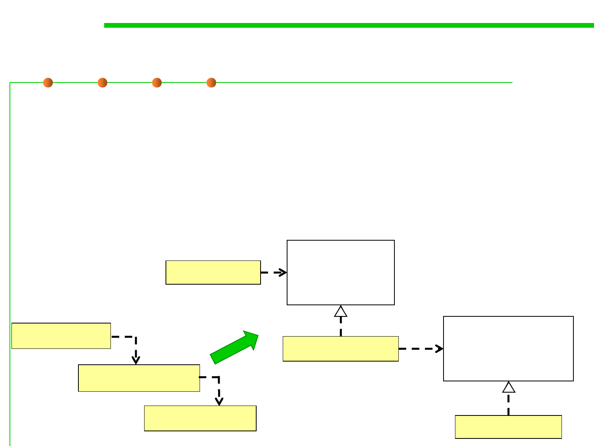

6.1 Metrics and Construction Principles for Maintainability
Dependency Inversion Principle
▪ A. High level modules should not depend upon low level modules.
Both should depend upon abstractions.高层模块不应该依赖于低层
模块,二者都应该依赖于抽象。
▪ B. Abstractions should not depend upon details. Details should
depend upon abstractions“, i.e., use lots of interfaces and
abstractions. 抽象不应该依赖于实现细节,实现细节应该依赖于抽象。
Policy Layer
<<interface>>
Policy Service
Interface
Policy Layer
Mechanism Layer
Mechanism Layer
<<interface>>
Mechanism Service
Interface
Utility Layer
Utility Layer